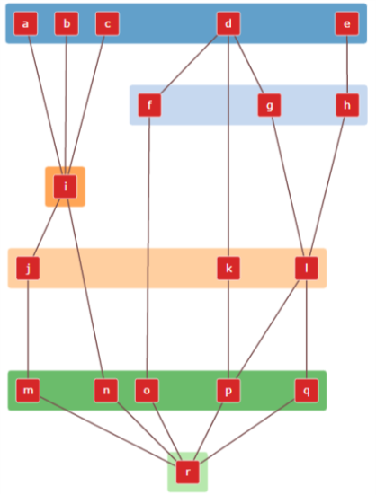

1. Input the factors and the relations between them:
2. Then run the code to obtain an interactive result of the relation map:
3. The boxes can be rearranged to obtain the desired layout:
Developed by Saurabh Gajula, IIT Bombay using the d3.js and web.cola library.